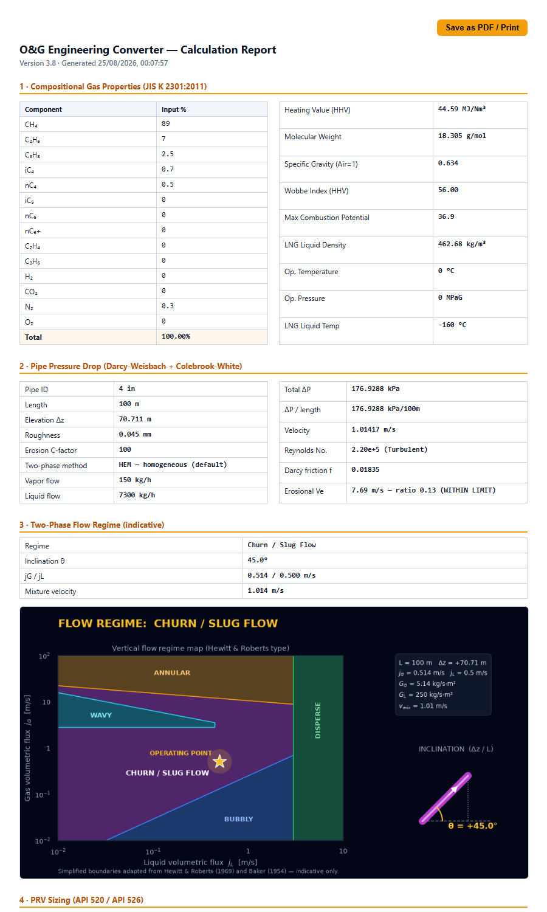

O&G Engineering Converter
v3.8.4· Export PDF ▸
the report this tool actually produces
THE EXPORTED REPORT — NOT A MOCK-UP

✓ Pipe ID, length, elevation, roughness, C-factor, two-phase method and both flows sit beside the results — same page, same run.
THE GUARD — CHANGE ONE INPUT
BEFORE
Two-Phase (HEM)
AFTER — roughness 0.045 → 0.046 mm
Two-Phase (HEM) · inputs changed — recalculate
The badge is appended to and recoloured; the figures stay on screen. It does not blank the card — it refuses to let a number and its inputs quietly disagree.
AND WHAT IT LEAVES OUT
Sections in the report7
Basic Eng cards carried5 of 9
Not in the report: Steam · NPSHa · Compressor · Gas Property Estimator · and the fittings / line-sizing row of the ΔP card.
A report that carries its inputs is only worth something if the two still match. That is the whole job of the stale flag — and the scope list above is in this graphic because a post about traceability that overstates its own coverage would be the same failure in a smaller font.